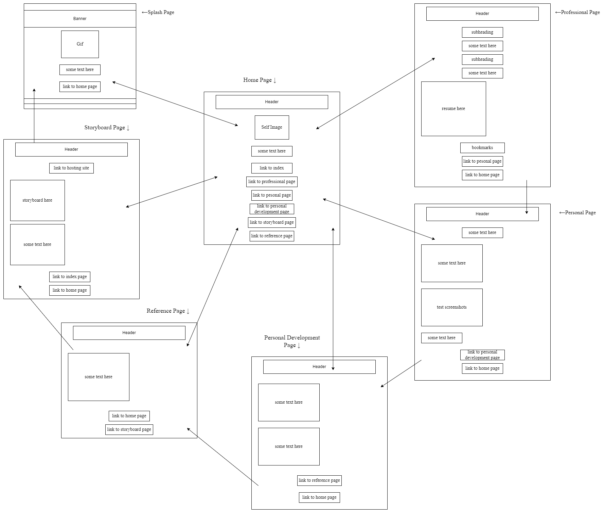

StoryBoard Page

Pages and Their Purpose
- Index Page
- The purpose of this page is to welcome and intrigue the audience.
- Home Page
- The page gives a brief intro and has all links to navigate the website.
- Professional Page
- The purpose of this page is to share my mindset and professional and career wise information about me.
- Personal Page
- The purpose of this page is to provide personal details about myself to the audience.
- Personal Development Page
- This page serves to illustrate my strengths and my mindset towards growth and self-improvement.
- Reference Page
- This page shares all the resources that aided me in creating and completing this website project.
- Storyboard Page
- (current page) This page shares the plan of the website.
Website Theme
Website theme should be simple but pleasant and effective. Colours include warm ivory, light brown, apricot and fern.
Target Audience
Target audience may be primarily peers and potential job recruiters.
Website Features
- Images
- Gifs
- Internal Page links for navigation
Hosting Link
https://outrapessoa.github.io/WP-IA1/
Go to Splash Page
Go to Home Page